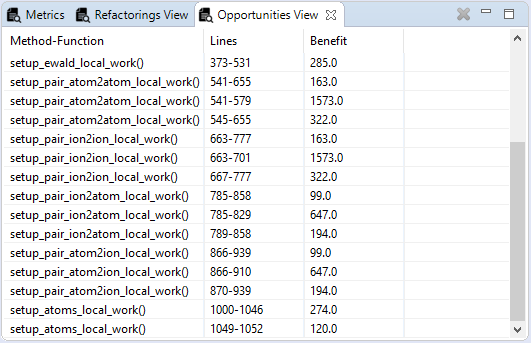

After one double clicks a file from the refactoring view and the process is finished, the Opportunity view is populated with all the possible refactorings. These refactorings are extract methods in the lines provided and with a specific benefit in the methods cohesion. For convenience, if an opportunity is double-clicked the specific file opens with the corresponded lines already selected.
